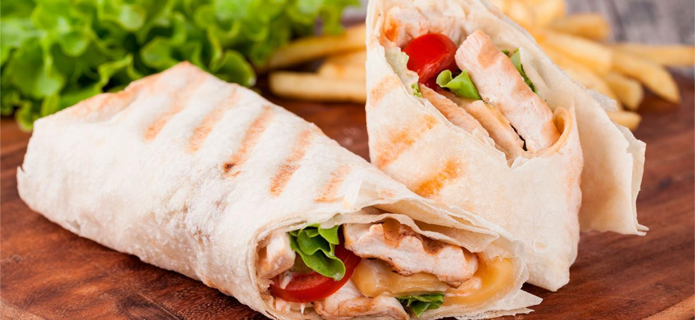

Tortilla de Harina
Receta de Tortilla de Harina
Regresar al Inicio

Ingredientes
- 1 paquete de tortillas de harina
- 4 tazas de chimichurri
- 3 ajos
- Salsa de Tomate
- 1 pechuga de pollo
- 1 cebolla pequeña
- Aceite
Elaboración (Pasos)
- Deshilachar la pechuga de pollo cocida
- Freir la cebolla, los ajos con el pollo
- Extender la tortilla
- Agregar la cebolla, el ajo y el pollo frito
- Calentar y engrasar un sarten
- Cocinar por ambos lados
- Colocar en un plato y regarle el chimichurri